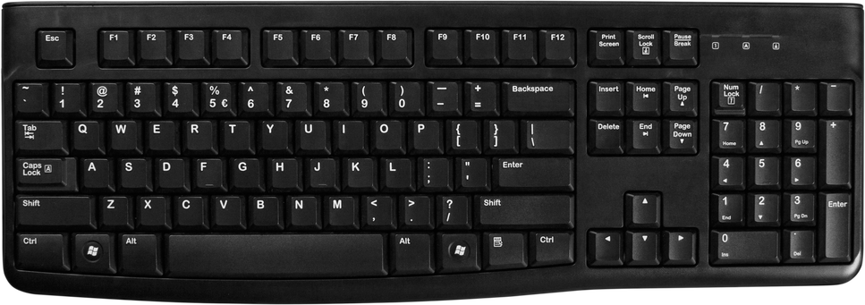
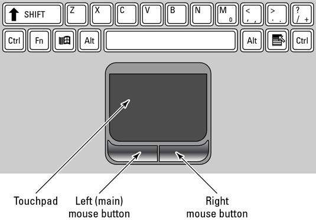
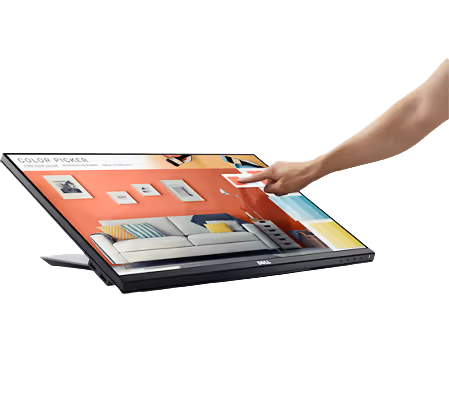
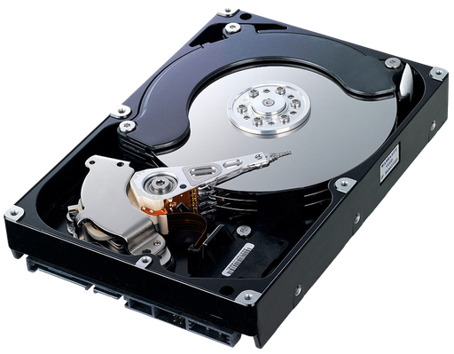
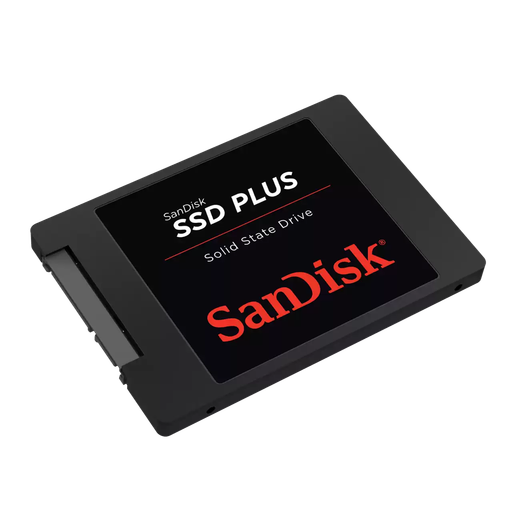
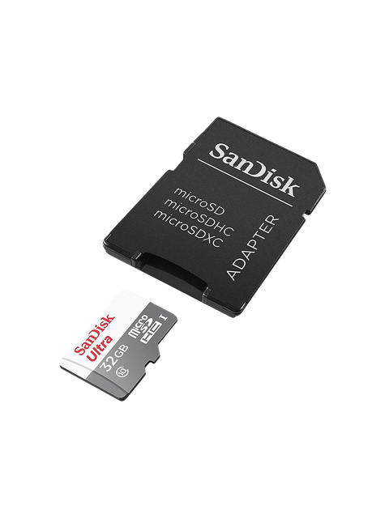
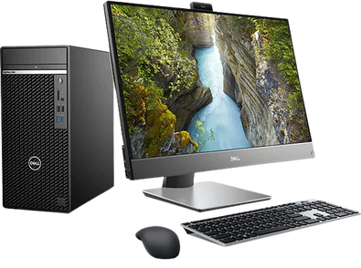
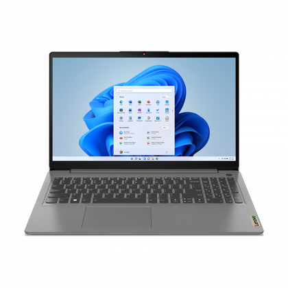

A printable guide to the theory for Grade 10 (Paper 2 content), with the year planner and exam extras.
Understanding what digital technology and ICT actually mean, how computers process information, and the basic model behind every computer system.
Digital technologies are electronic tools, systems and devices that use digital data (0s and 1s) to collect, process, store and communicate information.
Examples: computers, smartphones, networks, cloud computing, databases, AI systems, IoT devices.
| Term | Stands for | Meaning |
|---|---|---|
| ICT | Information Communication Technology | All technologies that capture, transmit and display data electronically — people, hardware, software, procedures, data. |
| IT | Information Technology | A subset of ICT — the development, maintenance and use of computer systems, software and networks for processing and communicating data. |
Computers come in different forms, each suited to a different purpose. They differ mainly in processing power, size / portability and typical use.
| Type | Description / typical use |
|---|---|
| Desktop | A non-portable personal computer for home or office; good performance for its price. |
| Laptop / notebook | A portable personal computer with a built-in screen, keyboard and battery. |
| Tablet | A small, touchscreen mobile device; very portable, for lighter computing tasks. |
| Smartphone | A pocket-sized touchscreen device combining a phone with apps, a camera and internet access. |
| Server | A powerful computer that manages a network and provides resources/services to other computers. |
| Embedded computer (microcontroller) | A tiny computer built into another device to control one specific task (e.g. a washing machine, car or smart TV). |
Roughly from most to least processing power: server → desktop → laptop → tablet → smartphone → embedded; for physical size the order is broadly the reverse.
| Term | Definition | Example |
|---|---|---|
| Data | Raw, unprocessed facts with no meaning on their own | 3, 5, 7, 1, 9 |
| Information | Data that has been processed and given meaning | "Sorted list: 1, 3, 5, 7, 9" |
| Knowledge | Insight derived from understanding information | "These are odd numbers in ascending order" |
All computer operations follow this cycle:
| Stage | Description | Example |
|---|---|---|
| Input | Raw data is collected and entered | Typing on keyboard, scanning a barcode |
| Processing | CPU manipulates data using instructions | Calculating a total, sorting a list |
| Output | Results produced in usable format | Screen display, printout |
| Storage | Data saved for future use | Saving to HDD, cloud backup |
| Communication | Data transferred between systems | Email, network transfer |
| Benefits | Negative Impacts |
|---|---|
| Improved communication | Cyberbullying |
| Automation of services | Addiction to digital devices |
| Access to information | Job displacement due to automation |
| Improved education and training | Privacy and security risks |
| Remote work possibilities | Digital divide |
The digital divide is the growing gap between people with access to digital technology ("haves") and those without ("have-nots"). Factors include:
Green computing is the environmentally responsible use of computers and digital devices — using technology in ways that reduce energy consumption and electronic waste.
Green computing saves electricity (and money), reduces pollution and carbon footprint, and conserves the natural resources used to manufacture new devices. E-waste (old phones, monitors, batteries) contains toxic materials like lead and mercury, so it should go to a proper e-waste recycler — not a normal landfill.
Hardware is every physical component of a computer — the parts you can actually touch. Software is the instructions that tell hardware what to do. Together they make a complete computing system.



Think of your body: your brain, eyes, hands, heart are hardware — physical organs you can touch. The thoughts, decisions, and reflexes your brain generates are software — instructions that control what your body does. A computer works the same way: the physical parts are hardware, and the programs running on them are software.
Every hardware component falls into one of five categories. Data flows through the system in a loop: Input → Processing → Output, while Memory holds data temporarily and Storage saves it permanently. Communication devices connect the computer to other devices.
| Category | Description | Examples | You use this when… |
|---|---|---|---|
| Input devices | Allow you to add data to the computer | Keyboard, mouse, touchscreen, scanner, microphone, webcam | You type, click, scan a document, or record a video |
| Output devices | Present results to the user | Monitor, printer, speakers, projector | You read text on screen, print a document, hear sound |
| Processing devices | Execute instructions and perform calculations | CPU, GPU | Any program runs — it's always using the CPU |
| Memory (RAM) | Temporary storage for data being processed | RAM, cache | You open a program — it loads into RAM |
| Storage devices | Permanently save data for later use | HDD, SSD, USB flash drive, memory card, optical disc | You save a file — it goes to storage |
| Communication devices | Allow computers to connect to networks | NIC, modem, router, Wi-Fi card | You browse the internet or share a printer |
| Device | How it works | Common use |
|---|---|---|
| Touchscreen | Detects finger or stylus pressure on screen | Smartphones, tablets, POS tills at Pick n Pay |
| Scanner (flatbed) | Passes light over document, captures image | Scanning ID documents, photos |
| Barcode scanner | Reads black/white stripes with laser | Supermarket checkouts, library books |
| Webcam / camera | Captures video/still images | Google Meet, Teams calls, security cameras |
| Microphone | Converts sound waves into digital data | Voice commands, online calls, recordings |
| Stylus/graphics tablet | Pressure-sensitive pen on surface | Digital art, architect sketches |
LCD/LED Monitor
| Specification | Meaning | Example |
|---|---|---|
| Resolution | Number of pixels (dots) on screen. More = sharper image | 1920×1080 (Full HD), 3840×2160 (4K) |
| Refresh rate (Hz) | How many times the screen redraws per second | 60 Hz standard; 144 Hz for gaming |
| Screen size (inches) | Measured diagonally corner to corner | 24" desktop, 15.6" laptop |
| LCD | Liquid Crystal Display — uses fluorescent backlight | Older monitors and TVs |
| LED | Improved LCD with LED backlight — brighter, thinner, more energy efficient | Most modern monitors |
| OLED | Each pixel emits its own light — perfect blacks, best contrast | Premium phones, TVs |
| Type | How it works | Use case | Cost per page |
|---|---|---|---|
| Inkjet | Sprays microscopic ink droplets onto paper | Home or office colour printing, photos | Medium |
| Laser | Electrostatic drum attracts toner powder, fuses it with heat | Fast high-volume office printing | Low (bulk) |
| Ink-tank | Bulk refillable ink reservoir — no cartridges | Schools, high-volume printing (e.g. Epson EcoTank) | Very low |
| 3D Printer | Layers material (plastic, resin) from a digital design | Prototypes, models, custom parts | Varies |
DPI (dots per inch) = print quality (higher = sharper).
PPM (pages per minute) = print speed.



| Device | Technology | Speed | Notes |
|---|---|---|---|
| HDD | Magnetic spinning platters — a read/write head moves over them like a vinyl record | Slow (~120 MB/s) | Cheap per GB, large capacities (1–20 TB), fragile (moving parts) |
| SSD | Flash memory chips — no moving parts, like a giant USB drive | Very fast (~500 MB/s read) | Durable, silent, faster boot times, more expensive per GB |
| NVMe SSD | SSD connected directly to CPU via PCIe slot | Extremely fast (~3500 MB/s) | Found in high-end laptops and desktops |
| USB flash drive | Flash memory in a portable stick | Moderate | Easy to carry, easy to lose; 8 GB–512 GB common |
| Memory card | Flash (SD, microSD) | Moderate–fast | Used in cameras, phones, drones |
| Optical disc | Laser reads/writes pits and lands on a spinning disc | Slow | CD (700 MB), DVD (4.7 GB), Blu-ray (25 GB) — mostly obsolete |
| Feature | HDD | SSD |
|---|---|---|
| Speed | Slow (~80–160 MB/s read) | Fast (~500 MB/s read; NVMe SSDs up to ~3500 MB/s) |
| Durability | Fragile — moving parts can break if dropped | Durable — no moving parts |
| Cost | Cheap (R500 for 1 TB) | More expensive (R800–R1200 for 1 TB) |
| Noise | Audible clicking/spinning sound | Completely silent |
| Power use | Uses more power — reduces laptop battery life | Uses less power — better for laptops |
| Boot time | ~45–60 seconds | ~8–15 seconds |
| Best use case | Bulk storage, backups, external drives | Operating system drive, main laptop drive |


RAM = your desk workspace — only holds what you're actively working on right now. It's fast to access but clears when you switch off.
Storage (HDD/SSD) = the filing cabinet — stores everything long-term, even when the power is off. Slower to access than RAM.
The higher up the pyramid, the faster and more expensive the memory — but there's less of it.
| CPU Cache | RAM | SSD | HDD | |
|---|---|---|---|---|
| Purpose | Holds the CPU's most-used data | Active programs and open files | Installed programs, OS | Bulk file storage |
| Volatile? | Yes — clears on power off | Yes — clears on power off | No — data stays | No — data stays |
| Speed | Extremely fast (nanoseconds) | Very fast | Fast | Slow |
| Typical size | 4–32 MB | 4–64 GB | 256 GB – 4 TB | 500 GB – 20 TB |
CPU cache itself comes in levels, from smallest/fastest to largest/slowest: L1 cache is extremely fast and very small, built directly into each CPU core; L2 cache is larger but slightly slower, usually still per-core; L3 cache is bigger again but slower than L2, and is shared across all the CPU's cores.
Ports are the sockets on a computer's case used to connect peripherals and cables. Knowing the common ones helps you pick the right cable for the right job.
| Port/Connector | Used for | Notes |
|---|---|---|
| USB-A | Standard rectangular port — flash drives, mice, keyboards | Only fits one way round |
| USB-B | Square-ish port — printers, scanners | Less common on modern laptops |
| USB-C | New standard — phones, modern laptops, external drives | Small, reversible (fits either way up), also used for charging |
| VGA | Connecting older monitors/projectors | Analogue signal, video only — no audio, mostly obsolete |
| HDMI | Connecting modern monitors, TVs, projectors | Digital signal, carries both video and audio |
USB speed depends on its version: USB 2.0 transfers at up to 480 Mbps, USB 3.0 up to 5 Gbps, and USB 3.1/3.2 even faster — always check the version, not just the connector shape, when speed matters.
| Unit | Abbreviation | Size | Real-world example |
|---|---|---|---|
| Bit | b | Smallest unit — 0 or 1 | A single on/off switch |
| Byte | B | 8 bits | One character, e.g. the letter "A" |
| Kilobyte | KB | 1 024 bytes | ~One page of plain text |
| Megabyte | MB | 1 024 KB | A small photo, a 3-minute MP3 song |
| Gigabyte | GB | 1 024 MB | A 2-hour movie, a smartphone game |
| Terabyte | TB | 1 024 GB | A large hard drive, server storage |
| Petabyte | PB | 1 024 TB | Entire data centres, cloud storage |
Software is the set of instructions that tells hardware what to do. Without software, a computer is just an expensive paperweight. Understanding the different types and how they are licensed is essential IT knowledge.
Software is a collection of programs and data that tells a computer how to perform tasks. You can't touch software — it only exists digitally. Hardware is the body; software is the brain telling the body what to do.
When you "buy" software, you're not actually buying the software — you're buying a licence to use it. The developer keeps ownership. Software licences define what you are and aren't allowed to do with the software.
| Type | Cost | Can modify code? | Can share? | Examples |
|---|---|---|---|---|
| Proprietary | Paid | No | No (only on licensed devices) | Microsoft Office, Adobe Photoshop, Windows |
| Freeware | Free | No (source code hidden) | Yes (as-is) | Skype, Google Chrome, Adobe Acrobat Reader |
| Shareware | Free for trial period, then pay | No | Limited (trial version) | WinZip, many antivirus programs |
| Free Open-Source (FOSS) | Free | Yes — source code public | Yes (under same licence) | Linux, LibreOffice, Firefox, GIMP |
The EULA is the legal agreement between you and the software developer. It's that long wall of text you click "I Agree" on when installing software.
It specifies: how many devices you can install on, what you're not allowed to do, and who owns the software.
| Licence Type | Who it covers |
|---|---|
| Single-user licence | One user on one device only |
| Multi-user licence | A specific number of users or devices (e.g. 10 PCs) |
| Site licence | Unlimited use within one organisation (e.g. a school) |
Copyright is the legal right that protects a creator's work. Software is automatically protected by copyright the moment it is created. You cannot copy, share or distribute software without the copyright holder's permission.
Piracy is the illegal copying or distribution of copyrighted software. It is a crime in South Africa and most countries.
Piracy is illegal, but it raises ethical questions that differ from ordinary theft — the original owner keeps their copy, so nothing is physically taken. Some argue piracy can even help creators by increasing exposure, or that it gives people access to software/entertainment they couldn't otherwise afford. These arguments don't make piracy legal, but they explain why it's a genuinely debated social issue, not simply "wrong."
These are alternative licensing systems that allow sharing and collaboration while still giving creators some protection.
System software manages and controls the hardware. The most important type is the Operating System (OS).
The Operating System (OS) is system software that manages a computer's hardware and software resources, and provides a platform on which application software can run. It is the first software to load when a computer starts up, and every other program runs through it.
The OS is like the manager of a restaurant. The manager organises the kitchen (hardware), assigns tasks to staff (processes), keeps everything running smoothly, and makes sure customers (users) get what they need.
| OS Type | Description | Examples |
|---|---|---|
| Stand-alone (desktop) | Installed on a single personal computer. Used for everyday tasks. | Windows 10/11, macOS, Ubuntu |
| Network (server) | Manages a network of computers. Controls who accesses what. | Windows Server, Red Hat Linux |
| Embedded | Built into a device to control one specific task. Very small. | Smart TV OS, ATM software, fridge firmware |
| Mobile | Designed for touchscreen devices. Efficient with battery. | Android, iOS |
Utility programs are small tools that help maintain the computer. They come with the OS or can be downloaded.
A device driver is a small program that allows the OS to communicate with a hardware device. Without the correct driver, hardware won't work properly.
Example: When you plug in a new printer, Windows downloads or installs the printer driver so it knows how to send data to that specific printer model.
Firmware is specialised, permanent software stored on non-volatile memory (usually a ROM or flash chip) inside a hardware device, controlling its most basic functions. Unlike a normal application, you don't install firmware yourself — it comes built into the device and is only changed through a controlled firmware update.
Examples: the BIOS/UEFI firmware that starts up a computer before the OS loads, the firmware inside a Wi-Fi router, or the firmware that runs a printer or smart TV.
Application software lets you perform specific tasks — it uses the OS as its foundation.
| Category | Purpose | Examples |
|---|---|---|
| Productivity | Create documents, spreadsheets, presentations | Microsoft Office, LibreOffice, Google Docs |
| Communication | Send messages, emails, make calls | WhatsApp, Outlook, Zoom, Teams |
| Education | e-learning, tutorials, reference | Khan Academy, Siyavula, Duolingo |
| Entertainment | Play games, watch media, listen to music | Netflix, Spotify, Steam |
| Creativity | Edit photos, videos, audio | Photoshop, Audacity, Canva |
| Web browsers | Access websites and web applications | Chrome, Firefox, Edge |
Computers only understand two states: on (1) and off (0). Everything — text, images, sound, video — must first be converted to those 1s and 0s before a computer can process it. This page explains how that conversion works.
Deep inside your computer, everything is built from tiny transistors — microscopic electronic switches. Each switch can only be in one of two states: on (1) or off (0). This is called binary because there are only two options.
A single 1 or 0 is called a bit (short for binary digit). On its own, one bit can only represent two things. But group 8 bits together into a byte, and suddenly you can represent 256 different values (28 = 256) — enough for every letter, digit, and common symbol.
Think of a light switch: it is either ON or OFF — that's 1 bit. Now imagine a row of 8 light switches. Each combination of on/off gives a different pattern — 256 possible combinations. That's how a computer stores one character.
Eight bits grouped together form one byte. The example below shows the byte 01000001 — the binary code for the letter A in ASCII.
| System | Base | Digits used | Used for |
|---|---|---|---|
| Decimal | 10 | 0–9 | Everyday counting — the system humans naturally use |
| Binary | 2 | 0, 1 | Internal computer data — all data is stored this way |
| Hexadecimal | 16 | 0–9, A–F | Colour codes (#FF5733), memory addresses, shorter binary notation |
In decimal, each column is worth 10× the column to its right (1, 10, 100, 1000…). In binary, each column is worth 2× the column to its right — these are the powers of 2.
Memorise the 8 place values: 128, 64, 32, 16, 8, 4, 2, 1. Every binary conversion uses these numbers. Notice each one doubles: 1×2=2, 2×2=4, 4×2=8, 8×2=16, and so on.
Multiply each bit by its place value, then add them all up. Only count the columns where the bit is 1.
(0 × 2⁷) + (0 × 2⁶) + (1 × 2⁵) + (0 × 2⁴) + (1 × 2³) + (1 × 2²) + (0 × 2¹) + (1 × 2⁰)
= (0 × 128) + (0 × 64) + (1 × 32) + (0 × 16) + (1 × 8) + (1 × 4) + (0 × 2) + (1 × 1)
= 0 + 0 + 32 + 0 + 8 + 4 + 0 + 1
= 45(1 × 2⁴) + (0 × 2³) + (1 × 2²) + (1 × 2¹) + (0 × 2⁰)
= (1 × 16) + (0 × 8) + (1 × 4) + (1 × 2) + (0 × 1)
= 16 + 0 + 4 + 2 + 0
= 22Divide the number by 2 repeatedly. Write down each remainder. Read the remainders from bottom to top.
25 ÷ 2 = 12 remainder 1 ← LSB (written last, read first from bottom)
12 ÷ 2 = 6 remainder 0
6 ÷ 2 = 3 remainder 0
3 ÷ 2 = 1 remainder 1
1 ÷ 2 = 0 remainder 1 ← MSB (written first, read last from bottom)
Read remainders bottom to top: 1 1 0 0 1
= 11001₂
Verify: 16 + 8 + 0 + 0 + 1 = 25 ✓13 ÷ 2 = 6 remainder 1
6 ÷ 2 = 3 remainder 0
3 ÷ 2 = 1 remainder 1
1 ÷ 2 = 0 remainder 1
Read bottom to top: 1 1 0 1 = 1101₂
Verify: 8 + 4 + 0 + 1 = 13 ✓Hexadecimal (hex) uses 16 symbols: the digits 0–9, then the letters A–F for values 10–15. Because one hex digit represents exactly 4 binary bits, hex is a much shorter way to write binary numbers. For example, 11111111 in binary is just FF in hex.
| Decimal | Binary (4-bit) | Hex |
|---|---|---|
| 0 | 0000 | 0 |
| 1 | 0001 | 1 |
| 2 | 0010 | 2 |
| 3 | 0011 | 3 |
| 4 | 0100 | 4 |
| 5 | 0101 | 5 |
| 6 | 0110 | 6 |
| 7 | 0111 | 7 |
| 8 | 1000 | 8 |
| 9 | 1001 | 9 |
| 10 | 1010 | A |
| 11 | 1011 | B |
| 12 | 1100 | C |
| 13 | 1101 | D |
| 14 | 1110 | E |
| 15 | 1111 | F |
Each position in hex is worth 16× the position to its right (just like binary uses powers of 2, hex uses powers of 16).
2A₁₆ has two digits: 2 and A (=10)
(2 × 16¹) + (A × 16⁰)
= (2 × 16) + (10 × 1)
= 32 + 10
= 42₁₀3F₁₆ has two digits: 3 and F (=15)
(3 × 16¹) + (F × 16⁰)
= (3 × 16) + (15 × 1)
= 48 + 15
= 63₁₀200 ÷ 16 = 12 remainder 8 → 8
12 ÷ 16 = 0 remainder 12 → C (12 in hex = C)
Read remainders bottom to top: C 8 → C8₁₆
Verify: 12 × 16 + 8 = 192 + 8 = 200 ✓Hex is everywhere in computing. Colour codes in web design use hex: #FF0000 = red (255 red, 0 green, 0 blue). Memory addresses in low-level programming are hex. Even Delphi lets you write hex literals with a dollar sign: $FF = 255.
A computer stores text by mapping each character to a number. The most common mapping is ASCII (American Standard Code for Information Interchange). Each character has a unique number — a code — which is then stored in binary.
| Character | ASCII decimal | Binary (8-bit) | Notes |
|---|---|---|---|
| Space | 32 | 00100000 | The space bar produces this |
| 0 | 48 | 00110000 | The digit zero (not the letter O) |
| 9 | 57 | 00111001 | Digits 0–9 = ASCII 48–57 |
| A | 65 | 01000001 | First uppercase letter |
| B | 66 | 01000010 | |
| Z | 90 | 01011010 | Last uppercase letter |
| a | 97 | 01100001 | First lowercase — exactly 32 more than 'A' |
| z | 122 | 01111010 | Last lowercase letter |
The difference between an uppercase letter and its lowercase version is always 32 in ASCII. So Ord('A') = 65 and Ord('a') = 97 (65 + 32 = 97). This is how Delphi's UpCase() function works internally — it subtracts 32.
| Standard | Description | Example |
|---|---|---|
| ASCII | 7-bit (128 chars) or 8-bit (256). English letters, digits, symbols only. | 'A' = 65 |
| UTF-8 | Variable length (1–4 bytes). Backward compatible with ASCII. Most common on the web. | Supports Zulu, Xhosa, Arabic, Chinese… |
| Unicode | Universal standard — 140 000+ characters including all world languages. | isiZulu characters, emoji |
// Ord: char → ASCII number
iCode := Ord('A'); // = 65
iCode := Ord('a'); // = 97
// Chr: ASCII number → char
cChar := Chr(65); // = 'A'
cChar := Chr(97); // = 'a'
// Convert lowercase to uppercase using the +32 rule:
cUpper := Chr(Ord(cLower) - 32);
// Print ASCII values of each character in a string
for i := 1 to Length(sText) do
memOut.Lines.Add(sText[i] + ' = ' + IntToStr(Ord(sText[i])));| Unit | Symbol | Size | Real-world example |
|---|---|---|---|
| Bit | b | Single 0 or 1 | One transistor state |
| Byte | B | 8 bits | One character, e.g. 'A' |
| Kilobyte | KB | 1 024 bytes | One page of plain text (~1 000 characters) |
| Megabyte | MB | 1 024 KB | A small JPEG photo, a 3-min MP3 song |
| Gigabyte | GB | 1 024 MB | A 2-hour HD movie, a mobile game |
| Terabyte | TB | 1 024 GB | A standard laptop hard drive |
| Petabyte | PB | 1 024 TB | Large data centres, cloud storage |
Computers work in binary (powers of 2). 210 = 1 024, which is close to 1 000 but not equal. So 1 KB = 1 024 bytes (not 1 000). Hard drive manufacturers sometimes use 1 000 to make drives sound bigger — that's why a "500 GB" drive shows as ~465 GB in Windows.
Compression reduces the amount of disk space a file uses. Decompression restores a compressed file back to a usable form. Higher compression means a smaller file size and faster download/streaming, but too much compression can reduce quality (pixelation in images, distortion in audio).
| Type | How it works | Trade-off | Example formats |
|---|---|---|---|
| Lossless | Removes redundant data in a way that can be perfectly reversed — no information is lost | Smaller file, but not as small as lossy | PNG (images), ZIP (any file), FLAC (audio) |
| Lossy | Permanently discards some data that is hard for humans to notice is missing | Much smaller file, but quality cannot be fully restored | JPEG (images), MP3 (audio), MPEG-4 (video) |
Like images, video files are compressed to keep file sizes manageable. Two things to know:
"Name TWO compression formats used for video footage" wants container/codec names like MP4, MKV, H.264 or H.265 — any two are usually accepted.
A computer network connects two or more computing devices so they can communicate and share resources. Networks are what make the internet, school computer labs, and your home Wi-Fi possible.
Imagine your school has 30 computers but only 2 printers. Without a network, only the computers physically connected to a printer could print. With a network, every computer can send print jobs to either printer — that's sharing resources.
Networks make all of the following possible:
Your school's computer lab is a LAN (Local Area Network). Every computer connects through a switch to a router, which connects to your ISP (Internet Service Provider) — maybe Telkom, MWEB, or Vodacom. That router gives every computer in the lab access to the internet.
| Type | Full name | Coverage area | Typical speed | SA Examples |
|---|---|---|---|---|
| PAN | Personal Area Network | ~1–3 metres (arm's reach) | Low–medium | Bluetooth headphones, Apple Watch connected to phone, wireless keyboard |
| HAN | Home Area Network | Within one household | Medium–fast | Home Wi-Fi router (Telkom/Vodacom fibre), smart TV, gaming console, laptop all connected |
| LAN | Local Area Network | One building or campus | Fast (100 Mbps–10 Gbps) | School computer lab, office building network, university campus network |
| WAN | Wide Area Network | Cities, countries, continents | Varies widely | The Internet; MTN/Vodacom cellular network connecting towns across SA |
A topology describes the physical layout of how devices are connected in a network. The most common topology used in school labs and offices is the Star Topology: every device connects directly to a central switch or hub.
| Advantages | Disadvantages |
|---|---|
| Easy to add new devices — just connect to the switch | If the central switch fails, the whole network goes down |
| One faulty cable only affects that one device | Requires more cable than some other topologies |
| Easy to diagnose faults — test one connection at a time | Cost of the switch adds to setup expense |
| Most widely used in schools and offices | Performance depends on the quality of the switch |
Star isn't the only topology — the exam expects you to recognise these as well, mainly so you can eliminate them as wrong answers:
Data from your computer travels through several devices before it reaches the internet. Here is how they connect:
| Component | Purpose | SA Example |
|---|---|---|
| NIC (Network Interface Card) | Connects a device to a network. Every computer has one, either built-in or as an add-on card. Assigns the device a unique MAC address. | Your laptop's built-in Ethernet port or Wi-Fi card |
| Switch | Connects multiple devices within a LAN. Smarter than a hub — sends data only to the specific device it's addressed to (using MAC addresses). | The network switch in your school's server room connecting all computers in the lab |
| Router | Connects two or more networks together. Routes data between your LAN and the internet using IP addresses. Usually also acts as a firewall. | The Telkom/Vodacom router in your home or school that gives Wi-Fi access |
| Modem | Converts digital computer data into a signal suitable for your internet line (ADSL, fibre, LTE), and vice versa. "Modulator-Demodulator". | Telkom ADSL modem, or LTE modem (like a Huawei Wifi router) |
| Access Point (Wi-Fi) | Extends wireless network coverage. Connects wirelessly to clients and wired to the switch/router. | Extra Wi-Fi routers placed in different classrooms of a large school |
A central server provides services (files, printers, internet access, authentication) to multiple client computers. The server is a dedicated, powerful computer that is always on.
All computers have equal status — any device can be both client and server. No single central machine is in charge. Common in small home networks.
| Feature | Client-Server | Peer-to-Peer (P2P) |
|---|---|---|
| Cost | Expensive — dedicated server hardware needed | Cheap — any computer can participate |
| Security | Strong — administrator controls all access | Weak — each device manages its own security |
| Management | Centralised — easy to manage by one admin | Decentralised — hard to manage as network grows |
| Performance | Consistent — server is optimised for the job | Variable — depends on each computer's specs |
| Backups | Easy — all data is on the server | Difficult — data is spread across all machines |
| Failure point | If server fails, whole network is affected | One computer failing rarely affects others |
| Best for | Schools, businesses, organisations (10+ users) | Small home networks (2–5 devices) |
| SA Example | School lab with a Windows Server; bank branch | Two friends sharing files between laptops at home |
The medium is the physical pathway over which data travels. Choosing the right medium depends on the required speed, distance, security, and budget.
| Medium | How it works | Speed | Range | Security | Cost | SA Example |
|---|---|---|---|---|---|---|
| UTP Cable (Ethernet, Cat5e/Cat6) |
Electrical signals through 4 twisted copper pairs. RJ45 connectors. | 100 Mbps – 10 Gbps | Up to 100 m per segment | Good — hard to intercept without physical access | Low — cheapest option | School computer lab wiring; office desk connections |
| Fibre Optic | Light pulses through thin glass/plastic strands. Not affected by electrical interference. | 1 Gbps – 100+ Gbps | Kilometres (single-mode) | Very high — almost impossible to tap | Higher — more expensive to install | Openserve/Vumatel fibre to your home; undersea cables connecting SA to Europe |
| Wi-Fi (802.11 radio waves) |
Radio signals transmitted through air. No cable needed. | 54 Mbps – 9.6 Gbps (Wi-Fi 6) | 10–100 m indoors | Needs encryption (WPA3) — radio signals can be intercepted | Low — just a router; no cabling needed | Home routers; school library hotspots; coffee shops |
| LTE / 5G (mobile broadband) |
Radio signals through cell towers. Cellular network. | 10–100+ Mbps (LTE); up to 1 Gbps (5G) | Kilometres per tower | Moderate — carrier-managed encryption | Variable — data bundle costs | MTN, Vodacom, Cell C towers connecting rural SA; mobile data on phones |
| Infrared | Infrared light — requires line of sight, no obstacles. | Very slow | Very short (<1 m) | Line of sight only | Very low | TV remotes, old phone data transfers (largely obsolete) |
Many South African schools and homes are getting fibre connections through providers like Openserve (Telkom), Vumatel, and Frogfoot. Before fibre, most homes used ADSL over copper phone lines. In rural areas where fibre hasn't reached, LTE (4G) from MTN, Vodacom, or Rain is the main option for internet access.
| Wireless (e.g. Wi-Fi) | Wired (e.g. Ethernet/UTP cable) | |
|---|---|---|
| Installation | No cables needed — quicker and cheaper to set up, especially for multiple devices | Requires running a physical cable to every device |
| Speed & reliability | Can be affected by walls, distance and interference from other devices | Generally faster and more stable/reliable |
| Flexibility | Devices can move around freely within range | Devices are fixed to wherever the cable reaches |
Know these general trade-offs well enough to compare wired and wireless for whatever scenario a question gives you — the specific recommendation always depends on the details in that scenario (number of devices, whether they move around, budget, etc.), not on a fixed rule.
A smartphone has its own built-in communication hardware (Wi-Fi and Bluetooth), so it can share its mobile data connection with other devices. This is called using the phone as a hotspot (or tethering) — a laptop or tablet connects to the phone's Wi-Fi signal and browses the internet through the phone's LTE/5G data, useful when no other Wi-Fi network is available.
The Internet and the World Wide Web are related but different. Learn how they work and how to use search engines effectively.
| Internet | World Wide Web (WWW) | |
|---|---|---|
| Definition | The global network of connected computers | A collection of websites accessible via the Internet |
| Technology | Physical infrastructure (cables, routers, servers) | HTML pages, URLs, HTTP protocol |
| Analogy | The road network | The shops and buildings on those roads |
| Term | Meaning |
|---|---|
| IP Address | Unique address identifying a device on a network (e.g. 172.217.16.142). A public IP address like this identifies a device on the Internet; a private address like 192.168.1.1 only identifies a device on a local/home network and is never directly reachable from the Internet. |
| Domain | Readable name linked to an IP address (e.g. google.com) |
| URL | Full web address of a specific page (e.g. https://www.school.co.za/it) |
| HTML | HyperText Markup Language — coding language used to build web pages |
| HTTP | Protocol for transferring web pages (unencrypted) |
| HTTPS | Secure HTTP with encryption — look for the padlock icon |
| ISP | Internet Service Provider — company that gives you internet access |
A web browser interprets HTML and displays web pages. Examples: Chrome, Firefox, Edge, Safari.
| Term | What it does | Example |
|---|---|---|
| Cookie | A small text file a website stores on your computer to remember information between visits | Staying logged in, remembering language settings, keeping items in a shopping basket after you close the browser |
| Browser cache | Web pages and images the browser saves locally so the same site loads faster next time | A news site's logo and layout load instantly on your second visit |
| Technique | How to use | Example |
|---|---|---|
| Exact phrase | Use quotation marks | "fastest animal" |
| Exclude words | Minus sign before word | fastest animal -cheetah |
| Specific site | site: prefix | IT help site:wikipedia.org |
| Search social media | @ prefix | IT news @twitter |
| Filter by date | Tools → Any time | Past 24 hours |
| Threat | Description | Protection |
|---|---|---|
| Phishing | Fake official emails stealing login details | Never click suspicious links; verify email address |
| Pharming | Fake websites stealing sensitive info | Check URL carefully before entering passwords |
| Spam | Unsolicited bulk emails | Use spam filter; don't open unknown attachments |
| Ransomware | Malware that encrypts your data and demands payment | Regular backups; don't open unknown attachments |
| Hoax | False information spread as if true | Verify with reputable sources before sharing |
The internet provides far more than just web browsing. This page covers plug-in applications, common internet services, and the technologies that power them.
A plug-in is additional software installed into an existing application (e.g. a browser) to extend its functionality.
| Plug-in | Purpose |
|---|---|
| PDF converter/reader | Allows browsers to open and display PDF files |
| Flash Player | Allows browsers to display interactive animations and videos (mostly obsolete now) |
| Java | Allows Java programs to run within a web browser |
| QuickTime / RealPlayer | Stream and play audio/video directly from the browser |
| Silverlight | Enhanced interactivity for web pages (replaced by HTML5) |
| Ad blockers | Block advertising content from loading |
Internet services technologies cover web development, web design, networking and e-commerce. They are used together to create functional, interactive websites.
| Technology | Purpose |
|---|---|
| HTML | Structures and displays web page content |
| CSS | Controls the visual styling of web pages (colours, fonts, layout) |
| JavaScript | Adds interactivity to web pages (animations, form validation) |
| PHP / ASP.NET | Server-side scripting — processes forms and connects to databases |
| SQL | Queries and manages database data for websites |
| FTP | Transfers files between computers over a network |
| Service | Description |
|---|---|
| World Wide Web | Collection of web pages accessed via browser using HTTP/HTTPS |
| Electronic mail — send and receive messages | |
| FTP | File Transfer Protocol — upload and download large files |
| VoIP | Voice over IP — phone/video calls over the internet |
| Streaming | Audio and video delivered in real time without downloading first |
| Cloud storage | Store and access files on remote servers (Google Drive, OneDrive) |
| Online banking | Manage bank accounts and transfer money via the internet |
| E-commerce | Buy and sell goods and services online |
The W3C sets the standards that all web browsers and websites should follow to ensure web pages display correctly across all devices and browsers. Web designers follow these standards.
Electronic communication covers all methods of exchanging information digitally — from email and instant messaging to video calls and social media.
| Form | Description | Examples |
|---|---|---|
| Send/receive digital messages with attachments | Gmail, Outlook, Yahoo Mail | |
| Instant Messaging | Real-time text communication | WhatsApp, Telegram, MS Teams |
| Video Conferencing | Live video and audio calls | Zoom, Google Meet, Skype |
| VoIP | Voice calls over the Internet | WhatsApp calls, Skype |
| Social Media | Platforms for sharing and interaction | Facebook, Instagram, X (Twitter) |
| Blogs | Online journal/informational website | WordPress, Blogger |
| Webinar | Online seminar or presentation | Zoom webinars, MS Teams |
| FTP | Transfer large files between computers | FileZilla, WinSCP |
username@domain.co.za — e.g. student@school.co.za
| Factor | Effect |
|---|---|
| Speed | Almost instant delivery worldwide |
| Cost | Most digital communication is free (data costs may apply) |
| Distance | No physical distance limitations |
| Accuracy | Written messages reduce misunderstandings vs. verbal, but spelling errors or autocorrect mistakes can still cause confusion |
| Time | Often asynchronous — many forms let the recipient reply when convenient (see synchronous vs asynchronous below) |
Electronic communication can be grouped by when the people involved take part:
| Synchronous | Asynchronous | |
|---|---|---|
| Timing | Real time, at the same moment | Time-delayed; reply when convenient |
| Everyone online together? | Yes — all parties must be available at once | No |
| Examples | VoIP/phone call, video conference, live chat | Email, SMS, blog, forum, voicemail |
Keeping a computer running well and securely requires regular maintenance tasks and an understanding of common threats.
| Task | Purpose |
|---|---|
| Disk Clean-up | Removes temporary files to free up storage space |
| Emptying the Recycle Bin | Permanently deletes files you've already removed, freeing the space they still occupied |
| Uninstalling unused software | Removes programs you no longer use, freeing storage space and reducing clutter |
| Defragmentation | Reorganises fragmented files on HDD for faster access (not needed for SSD) |
| Task Scheduler | Automates tasks like backups and updates at set times |
| File compression | Reduces file size using mathematical algorithms (.zip) |
| Archiving | Moves inactive data to separate storage (long-term, not duplicated) |
| Backup | Creates copies of data on a different device for disaster recovery |
A backup is like keeping a spare key to your house with a trusted neighbour. You hope you never need it, but the day you lock yourself out (a crash, ransomware, a stolen laptop) you will be very glad it exists — and glad it is kept somewhere else, not inside the locked house. That is why the safest backups are stored off-site or in the cloud: a fire or theft that destroys the original should not destroy the copy too.
| Type | Description |
|---|---|
| Full backup | Complete copy of all files. Slowest but easiest to restore. |
| Incremental backup | Only backs up files changed since last backup (any type). Fast, but restoring needs all increments. |
| Differential backup | Backs up files changed since last full backup. Compromise between full and incremental. |
Malware (malicious software) is the umbrella term for any software designed to damage, disrupt or gain unauthorised access to a computer system. It comes in several distinct forms, each with its own way of infecting a device and its own goal.
| Threat | Description | How It Spreads / Example |
|---|---|---|
| Virus | Attaches itself to a file or program and replicates when that file is run, then performs harmful actions | Opening an infected email attachment or running a pirated program |
| Worm | A self-contained program that spreads across a network on its own, without needing the user to open or run anything | Exploits weaknesses in network software to copy itself from one computer to the next |
| Trojan | Disguised as useful, legitimate software, but secretly gives an attacker back-door access to the computer | A "free" game or cracked software download that installs hidden malware alongside it |
| Ransomware | Encrypts the victim's files so they can no longer be opened, then demands payment for the decryption key | WannaCry (2017) locked hospital and business computers worldwide until a ransom was paid |
| Spyware | Secretly runs in the background, tracking browsing habits, keystrokes or personal information without the user's knowledge | Bundled with a free download; sends the collected data back to advertisers or attackers |
| Adware | Automatically displays unwanted advertisements, often as pop-ups, to generate revenue for its creator | Bundled with free software; can also slow the computer down or redirect the browser |
Both replicate and spread, which makes them easy to mix up. The difference is whether a person has to do something: a virus needs a human to open or run the infected file before it can act, while a worm spreads entirely on its own across a network, with no user action required at all.
Each measure below defends against a different kind of risk — some stop malware getting in, some protect data if a device is lost or intercepted, and some protect against problems that have nothing to do with an attacker at all, like a power cut.
| Measure | Purpose | How It Works / Example |
|---|---|---|
| Antivirus | Detects, prevents and removes malware | Scans files against a database of known malware, and watches for suspicious behaviour. Examples: Windows Defender, Avast — should run in the background and update itself automatically. |
| Firewall | Monitors network traffic; blocks unauthorised connections | Sits between the computer and the network, checking every connection against its rules and only letting approved traffic through — e.g. blocking an unknown program from secretly sending your data out to the internet. |
| Strong password | 8+ chars, uppercase, lowercase, numbers, special characters | The more varied and unpredictable a password is, the longer it takes an attacker's software to guess it. Sunset$92Purple! is far stronger than password123, which can be cracked almost instantly. |
| Access rights | Users only access files they are authorised for | Each user account is given a permission level (no access, read-only, or edit) per file or folder — e.g. a learner on the school network can view but not edit the shared timetable, and cannot open staff-only folders at all. |
| UPS | Uninterruptible Power Supply — keeps computer running during power failure | A battery inside the UPS takes over the instant mains power cuts out, giving enough time to save your work and shut down safely instead of losing it. Especially useful in South Africa during load shedding. |
| Encryption | Scrambles data so only authorised parties can read it | A mathematical key scrambles (encrypts) the data; only someone with the matching key can unscramble (decrypt) it. Examples: HTTPS encrypts data between your browser and a website; WhatsApp messages are end-to-end encrypted. |
Both are essential but guard different doors. An antivirus checks files already on the device for known malware. A firewall checks traffic moving into and out of the device over the network, before it ever becomes a file. A well-protected computer needs both.
A file is a collection of data stored as a single unit (a document, image, song, program). A folder (directory) is a container used to group related files. Organising files means storing them in a logical, meaningful way so they are easy to find later.
A path describes exactly where a file lives on a storage device — the drive, the folders, the file name and its extension.
| Part | Example | Meaning |
|---|---|---|
| Drive | C: | The storage device the file is on |
| Path (folders) | \Users\Mari\Documents\IT\ | The chain of folders leading to the file |
| File name | report | The name you gave the file |
| Extension | .docx | Tells the computer what type of file it is |
Put together: C:\Users\Mari\Documents\IT\report.docx
The extension (the letters after the dot) tells the operating system which program should open the file.
| Extension | File Type | Example |
|---|---|---|
.txt | Plain text file | notes.txt |
.docx | Microsoft Word document | report.docx |
.xlsx | Microsoft Excel spreadsheet | budget.xlsx |
.pdf | Portable Document Format | manual.pdf |
.jpg / .png | Image files | photo.jpg |
.mp3 / .mp4 | Audio / Video | song.mp3 |
.exe | Executable program | setup.exe |
.accdb | Microsoft Access database | students.accdb |
A File Manager (e.g. Windows File Explorer) is the software used to view, move, copy, rename and delete files and folders.
| Save As | Export | |
|---|---|---|
| Purpose | Save the file under a new name, location, or a different version/format of the same kind | Create a new output file in a different format for use elsewhere |
| Example | Save a .docx as an older Word version | Export a Word document to .pdf |
| Original | Replaced or copied | Stays open and unchanged |
2025_Term1_IT_Project.docx ✓, untitled2.docx ✗\ / : * ? " < > |Based on the 2026 IT CAPS Annual Teaching Plan. Practical (Paper 1) and Theory (Paper 2) topics per term.
This shows when each topic is taught during the year — it is not a list of what any single test covers. Any work done so far this year, plus the foundational work from earlier grades, can still be assessed, so don't study only the current term's topics.
These topics are not explicitly required by CAPS but have appeared in NSC past papers (2015–2024). Knowing them can mean the difference between a pass and a distinction.
Items marked P1 appear in Paper 1 (practical/Delphi), P2 in Paper 2 (theory), and Both in either paper. These are supplementary — master your CAPS content first.
CAPS never teaches "how to plan a whole program" as one topic — instead it hands you the individual planning tools (IPO tables, TOE charts, pseudocode) at different points across Grade 10 and 11. Strung together in order, those tools form a complete process for turning a vague idea into a finished, working program. None of this is examinable on its own, but following it will make your PAT — and any open-ended practical question — far less overwhelming.
A PAT is marked over months, revisited many times, and often built on by a partner or by future-you after a long break. Time spent planning up front — even just a page of notes on what each form does — is what makes it possible to pick the project back up in Term 4 and still understand your own Term 2 code.
These Delphi functions, components and techniques are not listed in CAPS but appear regularly in exam questions or are needed to solve exam problems efficiently.
Replaces all or first occurrence of a substring within a string.
s := StringReplace(s, 'old', 'new', [rfReplaceAll]);
Formats numbers/strings with precise control — Format('%.2f', [rVal]) gives 2 decimal places. More powerful than FloatToStrF.
Generate random integers. Always call Randomize; first to seed the generator. Random(100) returns 0–99.
Let users browse for files at runtime.
if OpenDialog1.Execute then sFile := OpenDialog1.FileName;
Convert between TDate values and string representation. Used with TDateTimePicker.
sDate := DateToStr(dtpDate.Date);
Catch runtime errors gracefully — e.g. invalid StrToInt input.
try iNum := StrToInt(edtNum.Text); except ShowMessage('Invalid'); end;
Returns the number of lines in a Memo. Often used in loops to process all memo lines.
for i := 0 to Memo1.Lines.Count - 1 do
Case-insensitive string comparison — avoids problems when user types 'yes', 'YES' or 'Yes'.
if SameText(sInput, 'yes') then
Convert integers to hexadecimal strings and back. Sometimes tested in conjunction with number systems theory.
sHex := IntToHex(255, 4); // = '00FF'
Built-in boolean checks — cleaner than MOD 2.
if Odd(iNum) then // true if iNum is odd
Break stops the rest of the loop from processing. Continue skips the rest of the current pass and moves on to the next iteration. Both appear in exam solutions — know the difference. (Break vs Exit is taught on the Loops page.)
These theory topics have appeared in NSC Theory papers but sit at the edge of or outside the formal CAPS scope. They typically appear in social implications or "current technology" questions.
AI appears regularly in social implications questions — automation of jobs, AI decision-making, bias in AI, chatbots. Not deeply technical — understand the concept and its social effects.
A distributed digital ledger of linked blocks. Used in cryptocurrency, supply chain, and secure records. Appeared in Gr12 theory papers. Know: what it is, how it works, and 2 uses.
AI-generated fake videos or audio that appear authentic. Social implications question topic — impacts on trust, truth, and politics. Know the definition and two risks.
A part of the internet not indexed by search engines, accessed via special software (Tor). Used for anonymity — legal and illegal uses. Appeared in theory cybercrime questions.
The principle that all internet traffic should be treated equally — ISPs cannot throttle or prioritise certain content. A social/political IT topic.
The successor to IPv4 — uses 128-bit addresses (vs 32-bit) to solve address exhaustion. Format: 2001:0db8:85a3::8a2e:0370:7334. Know why it was introduced.
RAID 0: speed (striping, no redundancy). RAID 1: mirroring (exact copy). RAID 5: striping with parity (balance of speed + fault tolerance). CAPS only mentions RAID in general — exams go deeper.
Hiding secret information within ordinary files (images, audio) without detection. Different from encryption — encryption scrambles data; steganography hides its existence. Appeared in theory questions.
Self-executing contracts where terms are written in code on a blockchain. No middlemen needed. Related to blockchain technology — appeared in Gr12 social implications.
Processing data close to where it is generated (the "edge" of the network) rather than sending it all to a central cloud server. Reduces latency — important for IoT and 5G.
All devices share a single communication line (the bus). Not in the current CAPS but appeared in older papers. Advantage: cheap. Disadvantage: single point of failure; performance drops with more devices.
Each device connects to several others, so data has more than one possible path. Not in the current CAPS (it sits under "network innovation"). Advantage: very reliable — traffic reroutes if a link fails. Disadvantage: expensive, many connections needed. It's how "mesh Wi-Fi" systems work.
Manipulating people (rather than systems) to reveal confidential information. Includes pretexting, baiting, tailgating. Appears in cybercrime theory questions.
Exams frequently ask you to convert values — not just explain systems. Practise: decimal↔binary, decimal↔hex, binary↔hex. Know the place values (powers of 2 and 16).
South African law governing how personal data must be collected, stored, and protected. Appears in privacy and legal implications questions. Know: what it is, who it protects, and 2 requirements.
SA legislation that criminalises hacking, ransomware, online fraud, and malicious communications. Often referenced in cybercrime theory questions for Gr12.
A virtual replica of a physical object or system, updated in real time from sensor data. Used in engineering, manufacturing, and smart cities. Appeared in 4IR/IoT questions.
A comprehensive reference of all Delphi functions you need to know — both CAPS-required and commonly appearing in exams.
| Function/Procedure | What it does | Example |
|---|---|---|
Length(s) | Returns number of characters | Length('Hello') = 5 |
Pos(find, source) | Position of substring (0 if not found) | Pos('lo','Hello') = 4 |
Copy(source, start, len) | Extract substring | Copy('Hello',2,3) = 'ell' |
Insert(text, var s, pos) | Insert text into string at position | Insert('!','Hello',6) → 'Hello!' |
Delete(var s, pos, len) | Remove characters from string | Delete(s,1,3) |
UpperCase(s) | All uppercase | UpperCase('hi') = 'HI' |
LowerCase(s) | All lowercase | LowerCase('HI') = 'hi' |
Trim(s) | Remove leading/trailing spaces | Trim(' Hi ') = 'Hi' |
StringReplace(s,old,new,flags) | Replace substring(s) | StringReplace(s,'a','e',[rfReplaceAll]) |
SameText(s1,s2) | Case-insensitive comparison (boolean) | SameText('Yes','yes') = True |
Concat(s1,s2) | Join two strings (same as +) | Concat('Hel','lo') |
s[i] | Character at index i (1-based) | s[1] = first character |
| Function | What it does | Example |
|---|---|---|
Sqr(x) | x squared (x²) | Sqr(4) = 16 |
Sqrt(x) | Square root | Sqrt(16) = 4 |
Power(base, exp) | base to the power of exp | Power(2,8) = 256 |
Round(x) | Round to nearest integer | Round(4.6) = 5 |
Trunc(x) | Remove decimal (truncate toward zero) | Trunc(4.9) = 4 |
Ceil(x) | Round UP to integer | Ceil(4.1) = 5 |
Floor(x) | Round DOWN to integer | Floor(4.9) = 4 |
Abs(x) | Absolute value | Abs(-5) = 5 |
Random(n) | Random integer 0 to n-1 | Random(6)+1 simulates a die |
Randomize | Seed the random generator (call once) | Call before Random() |
Inc(x) / Inc(x,n) | Increment by 1 or n | Inc(i) ≡ i := i+1 |
Dec(x) / Dec(x,n) | Decrement by 1 or n | Dec(i,3) ≡ i := i-3 |
Odd(n) | True if n is odd | Odd(3) = True |
Pi | Returns π (3.14159…) | rArea := Pi * Sqr(r) |
| Function | Converts | Example |
|---|---|---|
StrToInt(s) | String → Integer | StrToInt('42') = 42 |
StrToFloat(s) | String → Real | StrToFloat('3.14') |
StrToIntDef(s, default) | String → Integer (safe — returns default if invalid) | StrToIntDef(edtNum.Text, 0) |
IntToStr(n) | Integer → String | IntToStr(42) = '42' |
FloatToStr(r) | Real → String | FloatToStr(3.14) |
FloatToStrF(r, fmt, digits, dec) | Formatted real → String | FloatToStrF(r, ffFixed, 6, 2) |
Ord(c) | Char → Integer (ASCII value) | Ord('A') = 65 |
Chr(n) | Integer → Char | Chr(65) = 'A' |
UpCase(c) | Single char to uppercase | UpCase('a') = 'A' |
IntToHex(n, digits) | Integer → Hex string | IntToHex(255,2) = 'FF' |
DateToStr(d) | TDate → String | DateToStr(Now) |
FormatFloat(fmt, r) | Real → formatted string | FormatFloat('#,##0.00', 1234.5) |
| Section | What to expect | Common traps |
|---|---|---|
| Q1: General programming | Strings, loops, decisions, calculations (~30–40 marks) | Off-by-one errors in loops; forgetting to initialise variables |
| Q2: Arrays & files | 1D/2D arrays, text file reading/writing (~20–25 marks) | Using wrong index (0 vs 1-based); not closing file |
| Q3: OOP | Class with constructor, accessors, mutators, toString (~25–30 marks) | Calling Create on the object var (not class name); forgetting Result in functions |
| Q4: Database/SQL | TADOQuery, SQL statements including JOIN (~20–25 marks) | Not calling qry.Close before changing SQL; wrong JOIN ON condition |
| Recursion (Gr12) | Write a recursive function; trace it (~10–15 marks) | Missing base case; not returning Result |
| Topic | Typical mark allocation | What examiners look for |
|---|---|---|
| Hardware & software | 15–20 marks | Specific advantages/disadvantages; real-world examples |
| Networks & internet | 20–25 marks | Correct terminology; topology advantages/disadvantages |
| Databases & normalisation | 20–30 marks | Correct normal form identification; proper primary/foreign key use |
| Social implications | 20–25 marks | Balance of positive AND negative effects; specific examples |
| Cybercrime | 10–15 marks (Gr12) | Correct crime type names; effects on both victim and business |
| Current technology (IoT, AI, VR) | 10–15 marks (Gr12) | Practical application examples; social implications |